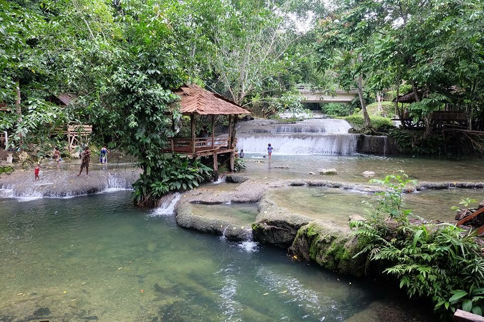
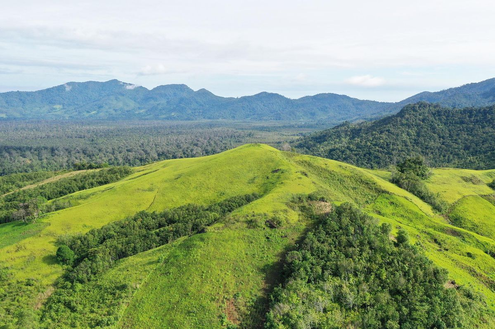
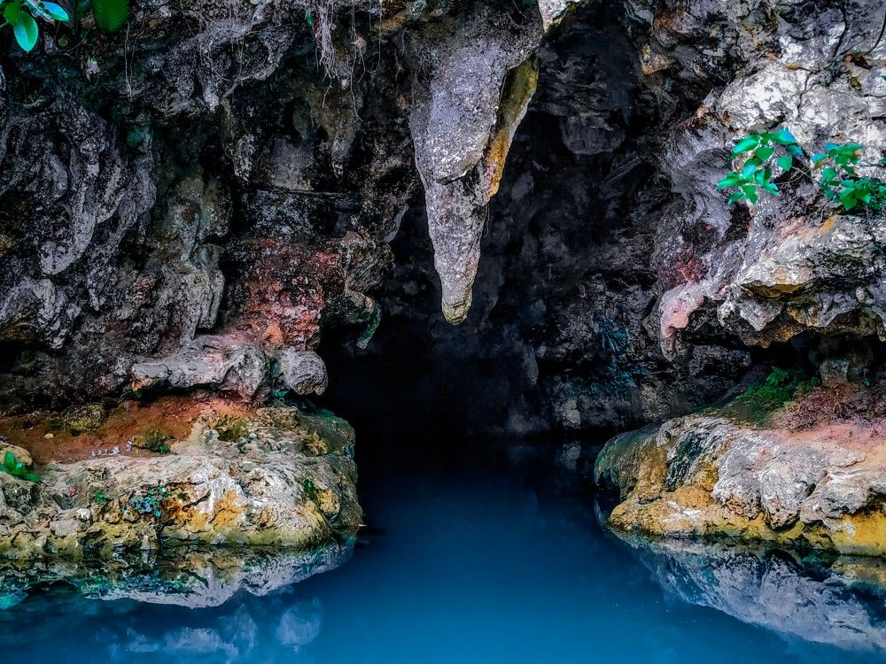

NATURE
Air Terjun Batarius
A natural waterfall destination with greenery and a quieter atmosphere for outdoor exploration.
01 / TOURIST PLACES
A simple guide to natural destinations around my hometown and its surroundings.

NATURE
A natural waterfall destination with greenery and a quieter atmosphere for outdoor exploration.

ADVENTURE
A destination for visitors who enjoy natural scenery, hiking, and an outdoor experience.

NATURE
A natural destination where visitors can slow down and enjoy the surrounding scenery.

ADVENTURE
A cave destination that offers a different perspective on the natural landscape.